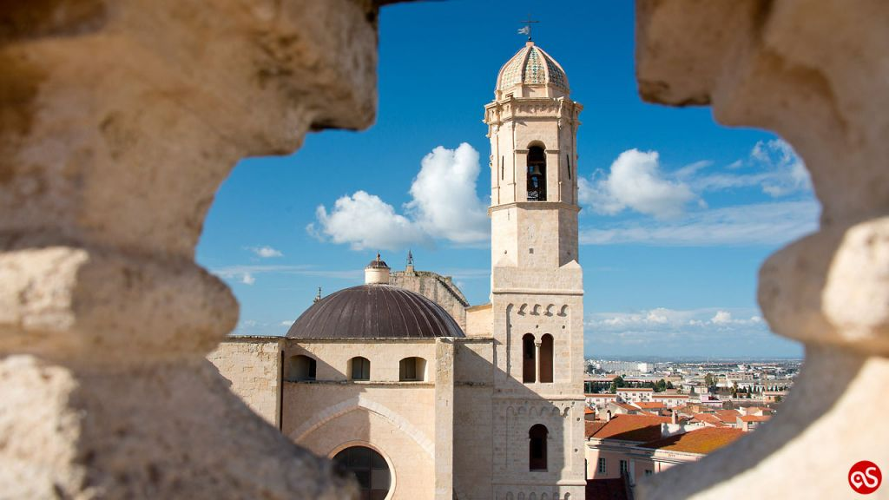
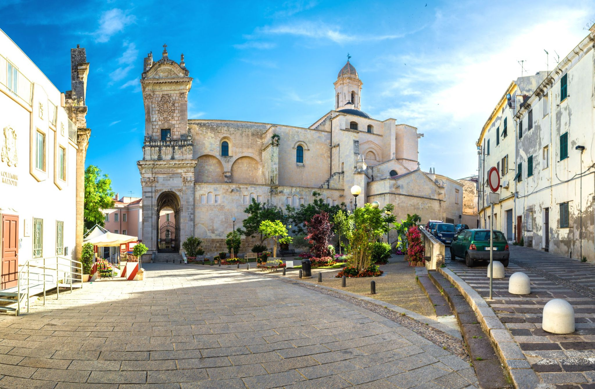
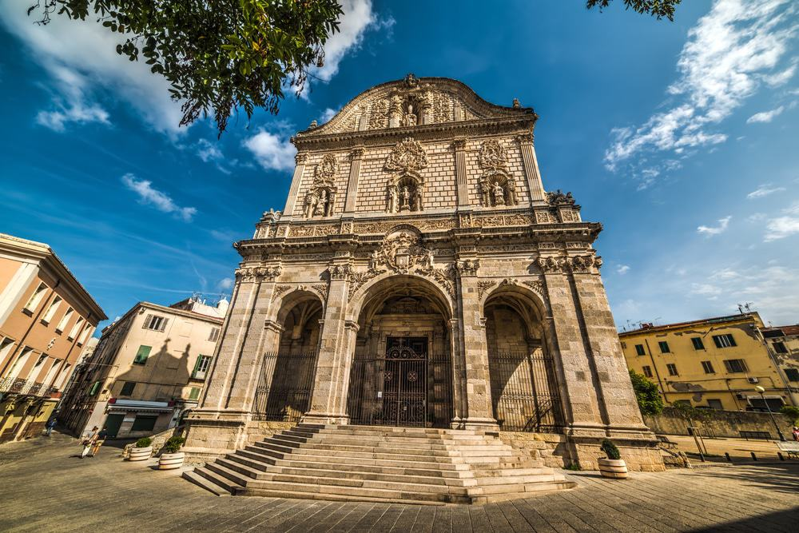

Quartieri di Sassari
Mappatura



Centro Storico
Il centro storico di Sassari rappresenta il cuore della città, sviluppato in maniera geometrica per adattarsi alle caratteristiche del territorio e alla storia.
Scopri di piùMonte Rosello
Monte Rosello è un quartiere ben conosciuto per i suoi servizi e la vivace comunità.
Scopri di piùSacro Cuore
Sacro Cuore è famoso per le sue aree verdi e il calore della comunità locale.
Scopri di piùLatte Dolce
Latte Dolce offre una varietà di servizi ed è conosciuto per le sue tradizioni.
Scopri di piùSanta Maria di Pisa
Santa Maria di Pisa è un quartiere con una ricca storia e molti punti di interesse.
Scopri di più